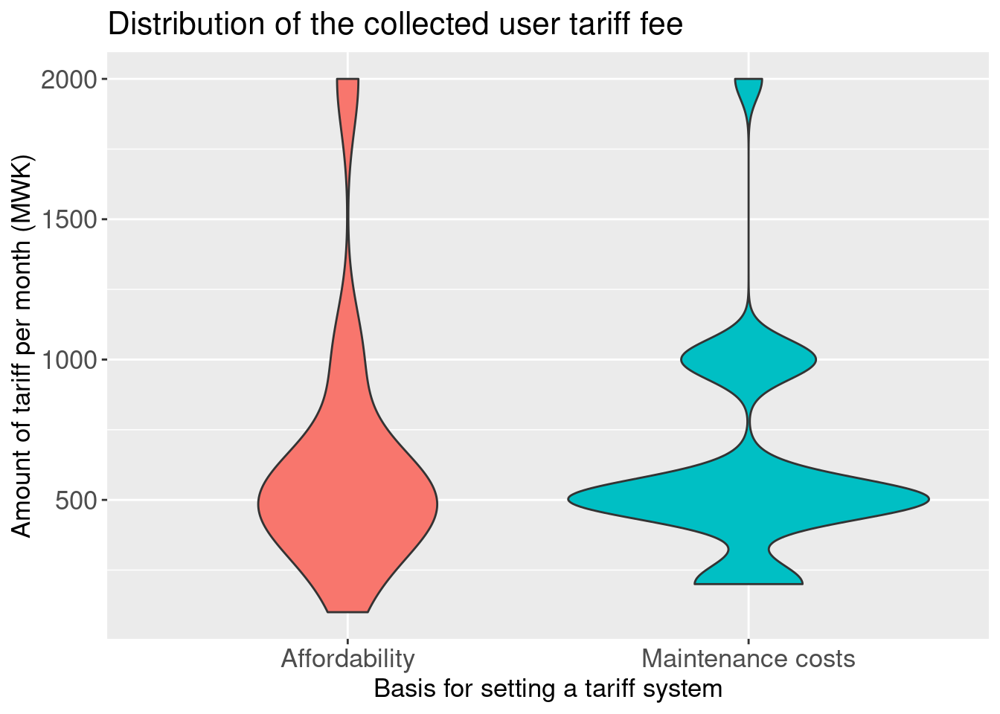

Determinants of borehole’ functionality in Northen Malawi
Author
Affiliation
Mabvuto Yesaya
Malawi University of Business and Applied Sciences, Malawi
Published
February 10, 2024
Introduction
As is the case with least developed countries in the global south, Malawi relies on hand-pumped borehole water for drinking and serves more than 86% of the population (Kumwenda et al. 2023; Grimason et al. 2013). Studies have found that a significant number of boreholes in Malawi contain elevated levels of contaminants such as fluoride, nitrate, iron, and chlorides, which may exceed the safe limits for drinking water set by the World Health Organization (Chimphamba and Phiri 2014)
A study on handpump borehole functionality was done in TA Wasambo in Karonga district (Northern Malawi) in 2023. Although the donor community keeps funding these sources of water, Ward et al. (2020) noted that there are issues with the sustainability of the projects. Therefore, the capstone project aims to explore factors that affect borehole sustainability.
Methods
The data were collected in Karonga district, TA Wasambo. Two (2) trained enumerators administered 20-minute questionnaires installed on koboTooolbox (www.kobotoolbox.org) to collect borehole functionality data from 300 respondents aged 18 and above. Questions included the borehole maintenance contributions from the community, the availability of borehole spare parts, and borehole management.
The study employed a stratified random sampling technique where 29 villages were purposively sampled based on the availability of boreholes. Then, each borehole water point committee was selected and included in the sample, i.e. one committee could be responsible for multiple villages.
Objectives
To know the users of boreholes per village.
To check if there is a relationship between the costs that were considered before setting the tariff and the amount that is agreed to be paid as a tariff per month now
To check if the actual tariff collected per month, tariff collection frequency, distance to where borehole spare parts are, presence of a service provider, actual tariff collected and conducting preventive maintenance lead to the functionality of boreholes
Results
Survey Respondents
A total of 198 surveys were conducted, where each survey targeted a particular borehole. In the villages, as the interest was in the boreholes, the required information was, therefore, sourced from respondents who were better able to supply the required information. The distribution of the survey respondents has been shown in Figure 1
A total of 19 Water Point Committees manage boreholes in TA Wasambo. Each Water Point Committee manages particular boreholes. The distribution of the villagers who draw water managed by a particular water point committee has been shown in Figure 2
Figure 2: Distribution of boreholes per Water Point Comitee
Basis for setting a user fee
There were 2 main reasons for setting a user fee. The user fee is set based on what the borehole users can afford or based on the mantainance needs for the system. However, in what ever the basis could be, there is not a difference in the amount collected as the median value is around MWK 500 as shown in Figure 3
Code
scatter <- borehole_data %>%filter(tariff_amount!=0& total_money!=0) |>select(tariff_costs_consider,tariff_amount)ggplot(scatter,aes(x=tariff_costs_consider, y=tariff_amount,fill=tariff_costs_consider))+geom_violin()+theme(legend.position ="None")+labs(title="Distribution of the collected user tariff fee",x="Basis for setting a tariff system",y="Amount of tariff per month (MWK)" )+theme(plot.title =element_text(size =16),axis.title.x =element_text(size =13),axis.title.y =element_text(size =13),axis.text.x =element_text(size =13),axis.text.y =element_text(size =13))

Figure 3: Reasons for setting a tariff
Functionality of boreholes
Several factors were seen to be corelated with the functionality of boreholes. When the distance to buy spareparts was 20 km away, a 1 unit increase in the distance decreased the probability of borehole functionality by 50 percentage points (p=0.01)0 And if there was no collection of borehole tariff money, the percentage of a borehole being functional also decreased by 50 percentage points. The Model has been shown in ?@tbl-iris
Table 1: Factors associated with borehole functionality.
======================================================================
Dependent variable:
---------------------------
bh_functional
OLS
----------------------------------------------------------------------
available_service_provider 0.099
p = 0.430
preventive_mantainance 0.082
p = 0.278
distance_to_spareparts_20_km_away -0.495**
p = 0.011
distance_to_spareparts_0_20_km_away 0.003
p = 0.975
distance_to_spareparts_dont_know 0.623*
p = 0.091
distance_to_spareparts_within_community
tarrif_frequency_none -0.492***
p = 0.0001
tarrif_frequency_per_2_months -0.179*
p = 0.096
tarrif_frequency_per_month -0.361***
p = 0.004
tarrif_frequency_per_quarter 0.069
p = 0.527
tarrif_frequency_per_year 0.105
p = 0.338
tarrif_frequency_when_required_for_repairs
Constant 0.869***
p = 0.000
----------------------------------------------------------------------
Observations 108
R2 0.400
Adjusted R2 0.338
Residual Std. Error 0.340 (df = 97)
F Statistic 6.464*** (df = 10; 97)
======================================================================
Note: *p<0.1; **p<0.05; ***p<0.01
Conclusions
Many factors come into play as far as the functionality of boreholes is concerned. The more people use a borehole, the more likely it is that the borehole will become non-functional. Also, the fees collected from the boreholes should be regularly collected as agreed, mostly every month. A gap of more than a month in fee collection contributes to borehole non functionality. It is recommended that social enterprises work on bringing borehole spare parts closer to the village (or perhaps right in the village) because when the borehole spare parts are sourced from far away, the chances of non-repair are high.
References
Chimphamba, J B, and O L Phiri. 2014. “Borehole Water Pollution and Its Implication on Health on the Rural Communities of Malawi” 10 (1): 32–39.
Grimason, Am, Tk Beattie, Sj Masangwi, Gc Jabu, Sc Taulo, and Kk Lungu. 2013. “Classification and Quality of Groundwater Supplies in the Lower Shire Valley, MalawiPart 2: Classification of Borehole Water Supplies in Chikhwawa, Malawi.”Water SA 39 (4): 573–82. https://doi.org/10.4314/wsa.v39i4.17.
Kumwenda, Steve, Muthi Nhlema, Given Ngwira, Peter Banda, and Tony Nyasulu. 2023. “Triggering Social Accountability for Failed Groundwater Supply Infrastructure in Rural Malawi: Chiradzulu Case Study.” Other. display. https://doi.org/10.5194/egusphere-egu23-891.
Ward, Jade S. T., Daniel J. Lapworth, Daniel S. Read, Steve Pedley, Sembeyawo T. Banda, Maurice Monjerezi, Gloria Gwengweya, and Alan M. MacDonald. 2020. “Large-Scale Survey of Seasonal Drinking Water Quality in Malawi Using in Situ Tryptophan-Like Fluorescence and Conventional Water Quality Indicators.”Science of The Total Environment 744 (1): 1–12. https://doi.org/10.1016/j.scitotenv.2020.140674.
![]()